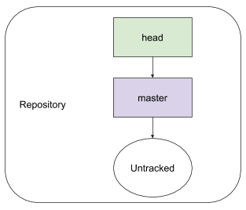
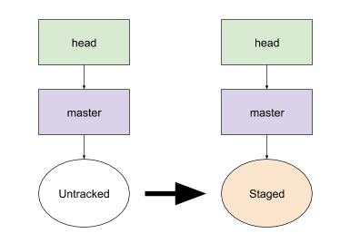
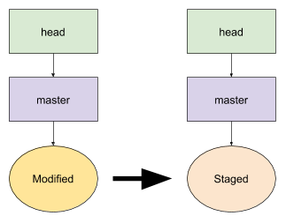
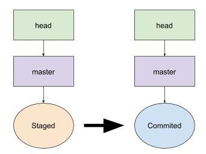
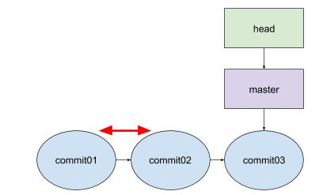
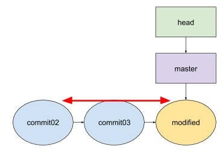
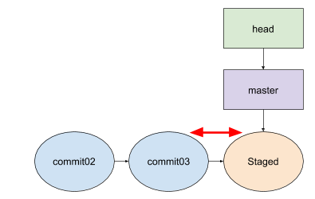
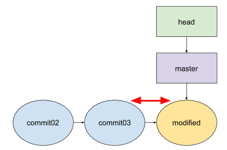
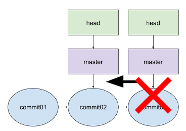

Git
一個寫程式版本控制工具，紀錄程式中每個檔案的變化，可以比較不同版本的檔案內容，可以在各版本之間做切換，可在指定的版本上debug或開發新的功能，多人開發新功能時，可以合併不同版本，上傳到github作保留。
功能
建立
建立新的repository步驟:
- git init
- git add .
- git commit
git init #建立repository

git add . #新檔案加入追蹤名單 或是 已修改檔案加入追蹤名單


git commit #產生新的commit

比較
檔案比較:
- 全部檔案比較
- commited與commited
- commited與modified
- commited與staged
- commited與untracked
- modified與staged
- 單個檔案比較: 後面接上檔案的路徑與名稱
commited與commited
git diff commit01 commit02 #比較commit01與commit02的檔案差異

commited與modified
git diff HEAD#比較modified與最後一個commit的檔案差異

git diff commit02 #比較modified與commit02的檔案差異

commited與staged
git diff --staged #比較staged與最後一個commit的檔案差異

git diff commit02 --staged #比較staged與commit02的檔案差異

commited與untracked
git status --untracked-files #只顯示檔案數量

modified與staged
git diff #比較modified與staged的檔案差異

切換
刪除
git reset --hard commit02 #刪除commit02之後的commit，並且把head指向commit02
